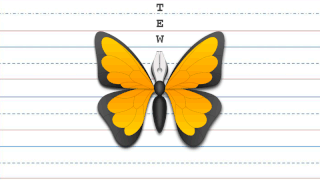

|  |
Design tools are objects, media, or computer programs, which can be used to design. They may influence the process of production, expression and perception of design ideas and therefore need to be applied skillfully. The appropriate development and presentation tools can substantially change how an audience perceives a project. The media used for design can be divided in two categories, visual and verbal. Conventionally, in areas like architecture, industrial design, or graphic design, visual media are considered more important than verbal media. In other areas like engineering, the use of verbal design media may be prevalent. |